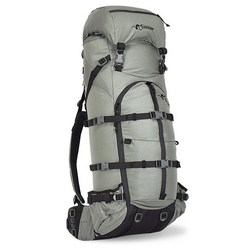
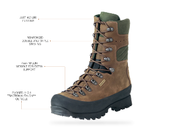
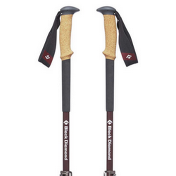
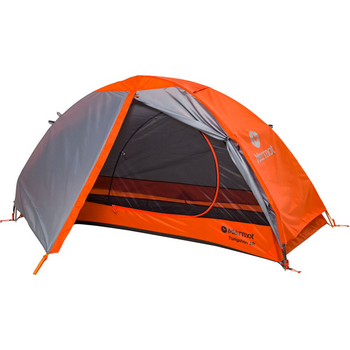

To Order:
Contact our Bridger Outdoors experts!
Email: sales@bridgeroutdoors.com
Phone: (406) 555-0123
Stone Glacier SKY 5900 $659.00
The Sky 5900 blends function of a front panel zip with the versatility of the proven Sky design. The Sky 5900 weighs 5.55lbs on a Medium Xcurve Frame. The large front panel zip allows quick access to virtually the entire pack while the Sky design offers excellent compression. The Sky 5900 can go from a 4,300 cubic inch bivy mode to a full volume of 5900 cubic inches with the Sky Lid. Add the load shelf volume of 2,500+ cubic inches to bring the overall max volume to 8,000 cubic inches. Anything from day trips to extended trips, the Sky 5900 has you covered.
A 22" front vertical pocket is incorporated for quick access to a spotting scope, sized to fit the largest of glass. Attachment points for Swing Out Pockets are located just inside the zipper for quick access to small items needed along the trail. Large external open-top pockets are located on each side of the pack for the carry of a tripod, water bottle, or the stock of a rifle.

Specs:
- Weight - 5lb 8oz. on Medium Xcurve, bag only weighs 2lb 7oz.
- 5,400 cubic inch main bag
- 4,300 cubic inch bivy-mode
- Hydration compatible
- Full panel zip for access to the main bag
- Front zipped pocket for quick access to essentials
- 150+ pound load rating
- Hydration compatible (Hydro Sleeve - Sold Separately)
- 2,500+ cubic inch expandable Load-Shelf
- Belt attachments
- Heavy-duty YKK #10 zipper
- Cordura 500 and Xpac fabric
- Heavy-duty, 1" Duraflex military approved buckles and webbing
- Made in the USA
WAIST BELT SIZES
- Small 28"-30"
- Medium 31"-36"
- Large 37"+
Kenetek Mountain Extreme $465.00
When you're hunting Dall Sheep in the Mackenzie Mountains of the Northwest Territories, you may be surprised with six inches of snow in August. Others may wait it out in the tent, but your Extremes give you the wherewithal to continue hunting no matter what. There's nothing tougher than high altitude sheep hunts and no boot tougher and more comfortable than these. Made in Italy. 3.9 lbs.

Specs:
- 10" tall 2.8mm thick premium full grain leather uppers with one piece vamp construction
- No seams down the tongue for abrasion resistance and waterproofness
- Reinforced double and triple stitching
- 7mm nylon midsoles for extra support with pack loads
- Boot hardware that swivels instead of breaking
- Reinforced rubber sole guard for extra abrasion resistance
- Windtex® waterproof breathable flexible membrane
- Lightweight K-Talon™ outsoles provide excellent traction
Black Diamond Alpine Carbon Cork $179.99
100% carbon fiber trekking pole built to withstand four-season alpine terrain now features the newly redesigned FlickLock® Pro adjustable technology, which is lighter, more ergonomic and easier to use. The Carbon Cork's namesake grip has also been updated with a soft touch grip top to provide a comfy feel, and the new solution strap draws from Black Diamond's innovative harness technology for a more secure fit.
On-trail, off-trail or in the snow, Black Diamond's collection of trekking and ski poles provide lightweight, durable and reliable support.

Specs:
- 100% carbon fiber shafts
- Soft-touch ergonomic grip top with 100% natural cork grip and EVA foam grip extension
- FlickLock® Pro adjustability— featuring forged aluminum construction
- Solution strap for premium performance
- Interchangeable tech tip compatible with carbide tech tips included
- Weight: 20.81 oz ea
- Collapsed Length: 61 cm (24 in)
- Usable Length: 100-130 cm (39-51 in)
Marmot Tungsten 2P 3-Season Tent $659.00
The Marmot Tungsten 2P Tent is a tent for the trails. No-See-Um mesh combines with a polyester taffeta to create the canopy while a polyester taffeta also creates the bathtub-style floor. The result is partial privacy blended with breathability, so you won't overheat on warmer nights. The fly covers your home-away-from-home while the rains roll through, while also creating a vestibule over each doorway. Gotta love that extra gear storage. A footprint is included to protect the tent from the rigors of nature, so you can continue on with every adventure.

Specs
- Zone pre-bend construction creates vertical walls
- More roomy sleeping area and greater head room
- Two D shaped doors
- Two vestibules
- Lamp shade pocket securely holds your headlamp to provide ambient light
- Footprint included
- Strategic clip placement provides larger interior volume
- Seam taped full coverage fly with vents
- Seam taped catenary cut floor
- Color coded "easy pitch" clips, poles and fly
- Interior pockets for small gear organization